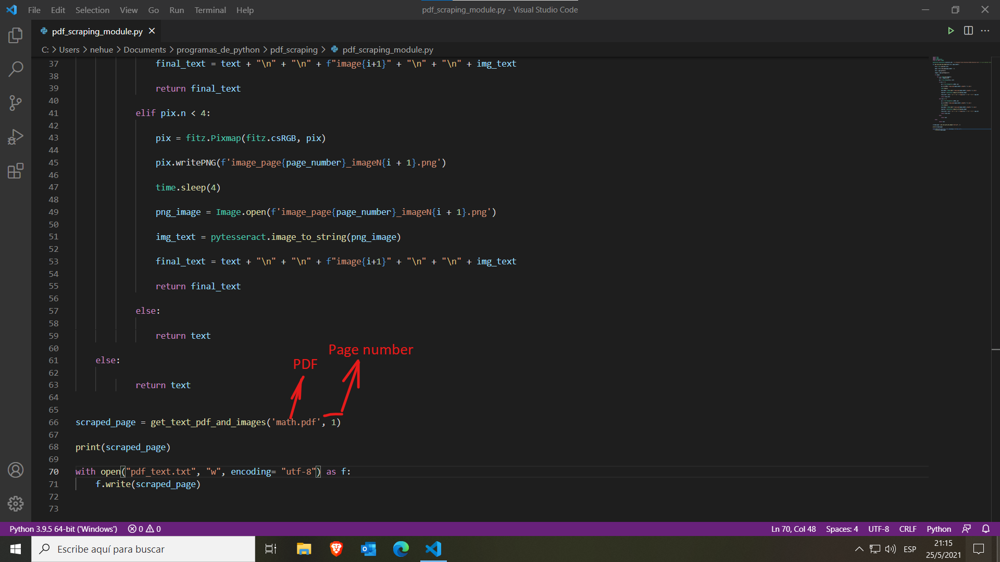
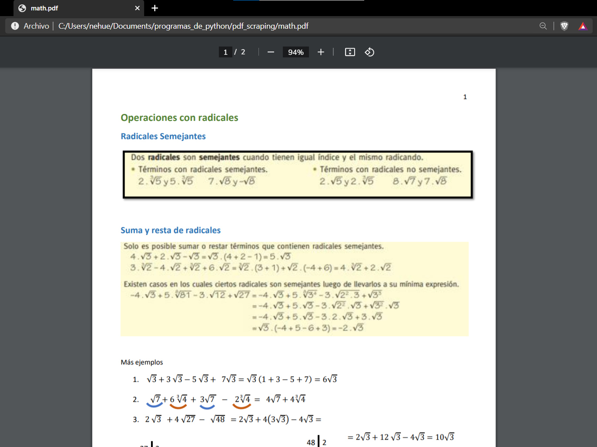
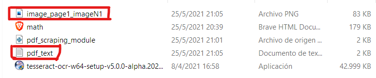

PDF to Text Converter
This is a simple project based on python and the Pytesseract, PIL and Fitz libraries, where the client has to specify the path of the PDF inside the code and the program will get all the text, including images with text inside the PDF file, and writte it down on a text file (wich could easily be an excel file, JSON or any other type of file).
The programm works this way: The client has to open the python code and writte down the path where a certain PDF they want to get text of is and the number of the page.
 Next the client has to excecute the program and it'll generate a text file with all the text from the PDF and if it has an image inside, the programm will retrieve the image, create a sepated image file and also get all the text from it.
Skills used in this project
- Python Programing Language
- Fitz library
- Pytesseract library
- PIL library